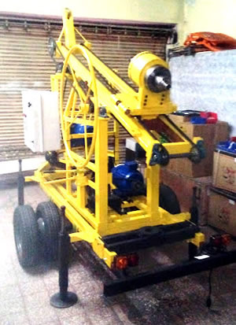
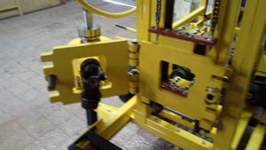
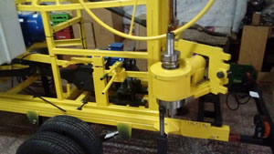

Leslie III v18



Equipo cardanico telescopico
Se puede adquirir en vercion trifasico, e hidraulico. (estos por pedido)
El sistema de embrague, en estas versiones es a diafragma, que simplifica enormemente el manejo.
Muy estable durante la conducción. De fácil maniobra a pie de maquina, para ubicarlo en el lugar de trabajo.
Bien balanceado.
Caracteristicas modelo estandar
• Equipado con motor 22 hp AE (ampliable segun requerimiento del cliente o a futuro)• Bomba de lodos 50AT
• Malacate manual para 1200 kg
Por pedido, malacate mecanico
• linga, grillete, roldana con rulemán
• Torre para barras de 1500 mm (opcional para barras de 2000 mm, con cargo)
• Sistema de agua y mangueras
(s/ válvula de retención)
• Junta de agua giratoria incorporada al cabezal
• embrague a diafragma
Caja de velocidad 3ra
• 4 pata regulables
Eje simple, con duales agragrarias
• Enganche regulable y cadena de seguridad
No cuenta con auxilio
• Luces reglamentarias
Los chasis son homologables, pero tramites y gastos, corren por cuenta del comprador. Se deben contactar con un ing. Civil y enviar las fotos requeridas.